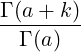

| Up | Next | Prev | PrevTail | Tail |
The Pochhammer notation (a)k (also called Pochhammer’s symbol) is supported by the binary operator Pochhammer(a,k). For a non-negative integer k, it is defined as (http://dlmf.nist.gov/5.2.iii)
| (a)0 | = 1, | ||
| (a)k | = a(a + 1)(a + 2)(a + k − 1). |
For a≠0,−1,−2,−3,…, this is equivalent to
|
(a)k =  . |
When n is integral, the defining product is expanded (assuming the switch exp is on). With rounded off, this expression is evaluated numerically if a is numerical and k is integral, and otherwise may be simplified where appropriate. The simplification rules are based upon algorithms supplied by Wolfram Koepf [Koe92].
The Pochhammer symbol is used quite extensively in the simplification and numerical evaluation of special functions.
| Up | Next | Prev | PrevTail | Front |